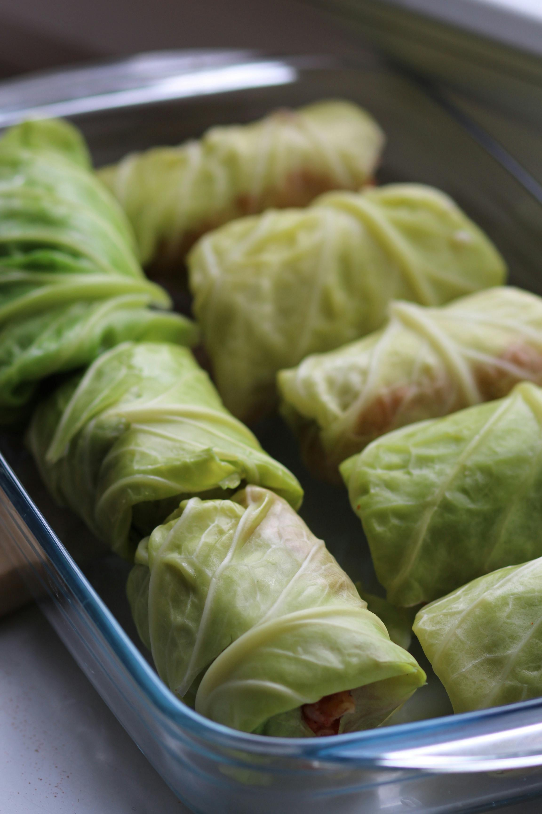

Steamed cabbage rolls
Background/intro
Me and my friend tested this recipe out once, and my family has been occasionally making it for dinner sometimes.
It's very yummy, and I would even say it's pretty healthy. You can add pretty
much anything to these dumplings! you can wrap it with mushrooms, noodles, vegetables, and more. This version
will just be the plain recipe. "They're pretty fun to make, but make enough so your family doesn't eat it in 2
seconds." - My dad

Image from https://www.pexels.com/photo/stuffed-cabbage-in-a-kitchen-11895545/
Tips
- This recipe requires you to handle raw meat, so cook until the internal temperature of the pork is 155 degrees farenheight!
- Wash hands after touching the meat, and don't touch anything else with your hands before washing them!
Time to make this recipe
Prep time:10 mins
Cook time: 20 mins
Servings: 3 (5 dumplings each)
Ingredients and Tools
| Ingredients |
Ingredients and tools |
| 1 lb of ground pork |
| 2 tbsp of soy sauce |
| Salt |
| 1/2 cup green onions |
| 1 tsp minced ginger |
| 1 tsp fish sauce |
| 1/2 tsp sesame oil |
| 15 leaves of napa cabbage |
| Tools |
| Plate |
| A pot big enough to fit that plate inside |
| Steamer grate |
Instructions
- In a bowl, combine the ground pork, green onions, fish sauce,
sesame oil, salt, pepper, ginger, and soy sauce. Mix until
seasonings are evenly distributed.
- Bring a pot of water to a boil.
- When the water is boiling, dip the cabbage leaves in
the boiling water for about 15-30 seconds. Take it out when its
slightly softened.
- Lay out the cabbage leaves on a cutting board, and
pat them dry with a paper towel.
- Place 1 1/2 tbsp of the pork onto the bottom of the
Leaf. Roll up the cabbage, like you would a burrito.
- Fill a pot of water to about the top of your steamer
grate. Place your plate onto the grate. Make sure the water does not
reach over the top of the plate. If you have a steamer, you are welcome to use that.
Once the water comes to a boil, place the dumplings onto the
plate and steam them for about 12-15 minutes. Make sure the meat is thoroughly cooked,
and theres no pink in the middle.
- Take the dumplings out, and eat them!!!